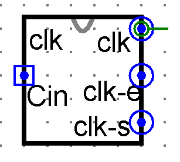

Four Quarters: the Clock
Sections 11.1 – 11.4 | Estimated time: ~45 minutes
11.1 You have been the control unit
What you have. A CPU core on one bus: four registers, TMP, BUS1, the ALU, ACC and FLAGS, with REG_SELECT turning a two-bit register number into an enable or set line. You can run any ALU instruction on it in three transfers.
What you can’t do yet. Run it without being there. Count what ADD R0, R1 took in Checkpoint 4: three transfers, and each transfer was four pin changes in a fixed order — raise an enable, raise a set, drop the set, drop the enable. Twelve changes, plus the register numbers and the opcode, for one instruction. Get the order wrong once and a register captures the wrong value.
What you can do by the end of the week. Set an instruction byte on one input, click a second input 24 times, and watch your CPU execute the instruction with nobody choosing a single control line.
Three circuits replace you, one per page. This page builds the first: the clock, which turns a single input that goes 0, 1, 0, 1 into the four moves of a transfer.
11.2 One transfer, four quarters
Moving a byte from R1 to R2 across the bus takes four moves, always in this order. You met it in Week 5 and did it by hand in Week 10:
- R1’s enable goes high. R1’s byte is now on the bus.
- R2’s set goes high. R2 now follows the bus.
- R2’s set goes low. R2 now holds the byte.
- R1’s enable goes low. The bus is free for the next transfer.
Why that shape? Your registers are built from MEM_1BIT latches, and a latch is transparent while its set line is high: its output follows its input. So the byte on the bus must already be there when set rises, and must still be there when set falls. Enable on before set on, and enable off after set off, guarantees both. If the enable dropped first, R2 would spend a moment following a bus that nobody drives — and keep whatever it saw when set finally fell.
Real processors do this in a single clock cycle, with the set signal arriving a little after the enable and leaving a little before it. Your CPU gives each move its own quarter so that you can click through them and see each one happen.
11.3 The clock circuit
The clock takes one input, clk_in, which you click. It produces three outputs: clk_e, which every enable in the CPU will be ANDed with; clk_s, which every set will be ANDed with; and clk, which the stepper on page 2 counts.
![A Logisim circuit. An input pin clk-in on the left connects to the clock input of a J-K flip-flop and to one input of each of two NAND gates. The flip-flop's J and K inputs are both tied to a constant 1 at the top. Its Q output goes up to an output pin labelled clk and into the upper NAND gate, whose output passes through a NOT gate to an output pin labelled clk-set. The flip-flop's lower output, Q-bar, goes into the lower NAND gate, whose output goes straight to an output pin labelled clk-enable.](images/manual-clock-circuit.png)
clk_in, clk, clk_s and clk_e.The flip-flop. In Week 4 you met the edge-triggered flip-flop and were told this one was coming: a J-K flip-flop with both inputs tied to 1, which toggles — its output Q flips — on every rising edge of its clock input, and does nothing on a falling edge. Clocked by clk_in, its Q changes once for every two changes of clk_in. That Q is clk.
The J-K flip-flop is Logisim’s own, from the Memory folder. It is the single named exception to the course’s gates-only rule: the clock is infrastructure, you never build a J-K anywhere in this course, and the learning is in the two NAND gates beside it, which you do build. Every other part this week comes from Wiring and Gates, or from tabs already in your file.
The two NAND gates. Each one compares clk_in with one side of the flip-flop:
clk_s= NOT (clk_inNANDQ) =clk_inANDclk. The set quarter is the only one in which both are 1.clk_e=clk_inNANDQ̄. It is 0 only whenclk_in= 1 andclk= 0 — the one quarter with every enable off.
Start from clk_in = 0 and clk = 0, which is where Logisim puts both after Simulate → Reset, and click clk_in four times. This table is produced by the same model that runs the widget below:
| Clicks | clk_in | clk | clk_e | clk_s | Quarter |
|---|---|---|---|---|---|
| Loading the table… | |||||
Four clicks, four quarters: enable on, set on, set off, enable off — exactly the four moves of §11.2, and the fifth click starts the next transfer. Notice that clk_s is never 1 unless clk_e is 1 too. AND every enable in the CPU with clk_e and every set with clk_s, and no transfer can ever have the wrong shape, whatever else goes wrong.

clk_in on the left, the three outputs down the right. His own note on this figure: the outputs are in a different order here than inside the circuit. An appearance’s pin order need not match the inside, and that is a real source of miswiring — hover over each pin in Logisim to check its name before you connect it.11.4 Settling
Week 4 warned that “everything must settle before the next phase” would stop being a fact about chips and become a constraint on your own design. Here it is. When R1’s enable rises, its byte does not appear on the bus instantly: it passes through R1’s output gates, along the bus wires, and into every input the bus feeds — including the ALU, whose result ripples through eight full adders before it is stable. A latch that closes while any of that is still changing captures a mixture of old and new.
The quarters give it time. The byte goes onto the bus a whole quarter before the set rises, and stays a whole quarter after the set falls. In a real processor those margins have names — setup time before the capturing edge and hold time after it — and the length of the clock cycle is chosen so that the slowest path in the circuit settles inside it. In your CPU, you are the one choosing: Logisim settles everything between your clicks.
Where you are
You can say what the clock’s three outputs are in each quarter, and why the set quarter sits inside the enable quarters. Next page: a transfer is four quarters, but an instruction is several transfers. Something has to count them.